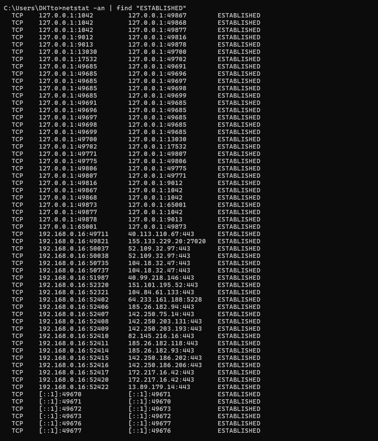
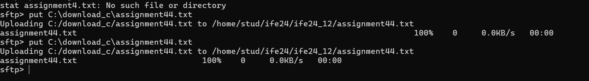

TCP and UDP Protocols
TCP Protocol
TCP (Transmission Control Protocol) is a connection-oriented protocol that ensures reliable communication over the network. It manages data delivery, sequencing, and retransmission of lost packets.
UDP Protocol
UDP (User Datagram Protocol) is a connectionless protocol that emphasizes low-latency communication. It does not guarantee delivery or order of packets, making it faster but less reliable.
TCP Parameters
- Sequence Number
- Acknowledgment Number
- Window Size
- Flags (SYN, ACK, FIN, etc.)
UDP Parameters
- Source Port
- Destination Port
- Length
- Checksum
TCP Connection
TCP connections involve a three-way handshake for connection establishment and a graceful release process.
Three-Way Handshake
The process involves the following steps:
- SYN: Client sends a synchronization request to the server.
- SYN-ACK: Server acknowledges the request and sends its own synchronization request.
- ACK: Client acknowledges the server's response, and the connection is established.
Ports
Ports are numerical identifiers for processes or services on a device. Common examples:
- HTTP: Port 80
- HTTPS: Port 443
- DNS: Port 53
Practical Part:
2.1.1:


2.1.2:
2.1.3:

2.1.4: